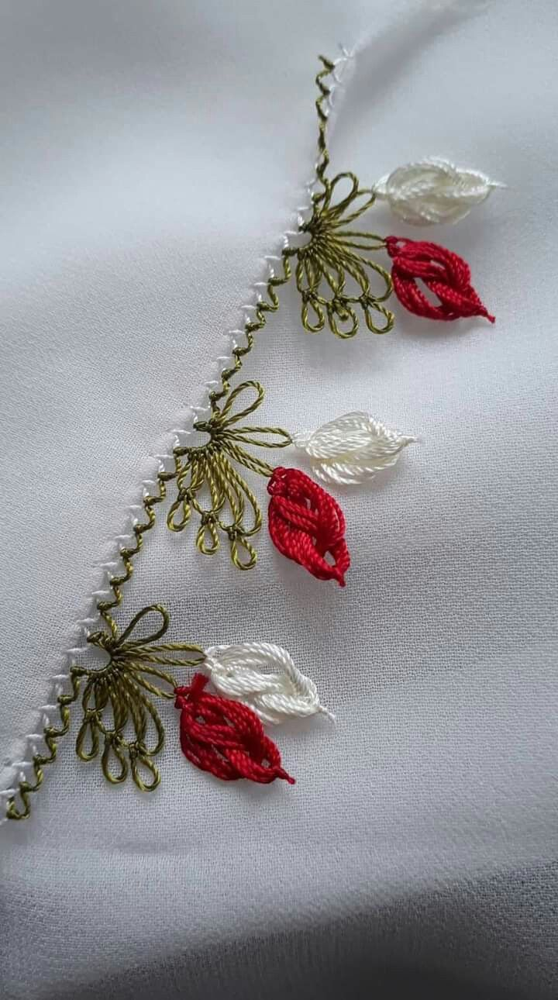
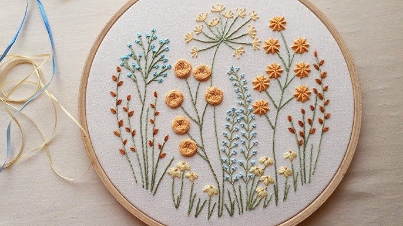
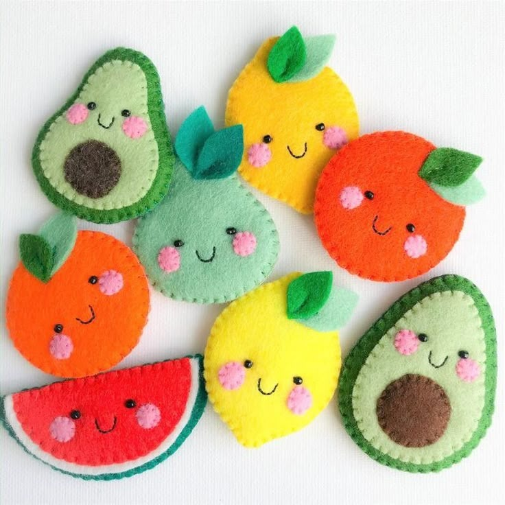

Malzemeler:
• Oya ipi (naylon dantel ipliği)
• İğne (ince ve sağlam)
• Küçük makas
• Yazma/kumaş
Adımlar:
1- Yazma kenarına 3-4 zürafa (ilmek) yaparak başla.
2- Ortadaki zürafa üzerine çıkıp artırmalı zürafalar yaparak üçgen form oluştur.
3- Üstten geri dönerek her sırada ilmek sayısını azalt (piramit gibi).
4- Ortadaki zürafalara düğüm atarak çiçek formunu ver.
5- Motifi tamamlayınca ipi dikkatlice kes.

Malzemeler:
• Nakış kasnağı (ahşap ya da plastik – 13-18 cm çap ideal)
• Etamin, keten veya pamuklu kumaş (kasnaktan büyük boyut)
• Nakış ipi (muline iplik) – dilediğin renkte
• Nakış iğnesi (küt uçlu ve delikli)
• Makas
• Desen (hazır çizim ya da internetten çıktı alabilirsin)
• (İsteğe bağlı) Kurşun kalem ya da suda silinen kalem (desen çizimi için)
Adımlar:
1- Kumaşı düzgünce gererek kasnağa yerleştir.
2- Arka kısmı hafif çekiştirerek kırışıksız hale getir.
3- Kasnağın vidasını sıkıştırarak sabitle.
4- Çizmek istediğin deseni kurşun kalemle kumaşa hafifçe aktar. Işık kutusu veya pencere kullanabilirsin.
5- Nakış ipliğini 40–50 cm kes, 2-3 katla çalış, iğneye geçirip ucunu düğümle.
6- Kumaşın arkasından öne doğru iğneyi çıkar, deseni takip ederek dikişe başla.
Kullanabileceğin temel dikiş türleri:
• Back Stitch (geri dikiş)
• Satin Stitch (düz dolgu)
• French Knot (fransız düğümü)
• Lazy Daisy (tembel papatya)
7- Her ipliği bitirdiğinde kumaşın arkasında düğüm atarak sabitle.
8- İşlem tamamlanınca kasnağı arka kısmından kumaşa yapıştırarak tabloya dönüştürebilirsin.
Arkayı kapamak için keçe ya da kumaş dikebilir, iplikleri gizleyebilirsin.
Kasnağın üstüne kurdele takarak duvara asabilirsin.

Malzemeler:
• Pamuklu kumaş veya keçe (renk ve desen tercihi sana ait)
• İğne (orta kalınlıkta el dikişi iğnesi)
• İplik (kumaş rengine uygun)
• Dolgu malzemesi (elyaf pamuk veya polyester)
• Makas
• Kurşun kalem veya kumaş kalemi
• İğne iplik geçirici (isteğe bağlı)
• Düğme, boncuk, kurdele (süsleme için)
• Desen kalıbı (örnek: tavşan, kedi, ayı)
Adımlar:
1- Kağıda yapmak istediğin oyuncak şeklini çiz.
2- Kumaşın üzerine kurşun kalem veya kumaş kalemiyle çizebilirsin.
3- Deseni 2 kez kes (ön ve arka yüz için).
4- İki kumaş parçasını yüzleri birbirine bakacak şekilde koy.
5- Kenarlardan 0.5 cm pay bırakarak el dikişi ile birleştir.
6- Dikişi bitirmeden 5 cm boşluk bırak.
7- Oyuncağı dolgu malzemesiyle doldur.
8- Boşluğu dikişle kapat.
9- Düğme, boncuk, kurdele ile süsle.
10- Dikişleri kontrol et, gevşek iplik varsa düğümle ya da kes.